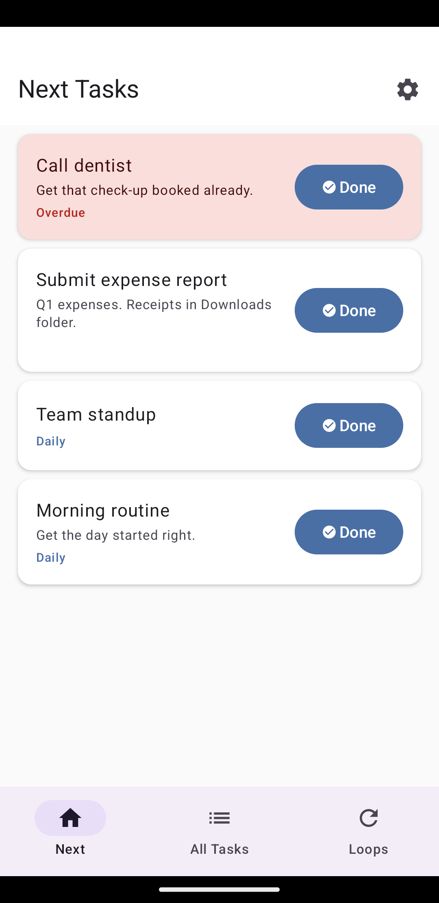
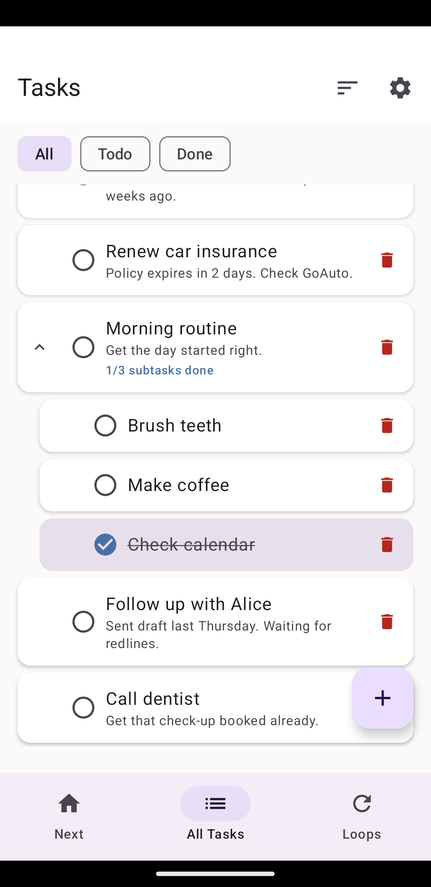
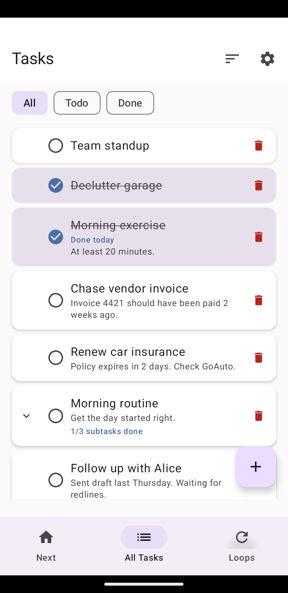
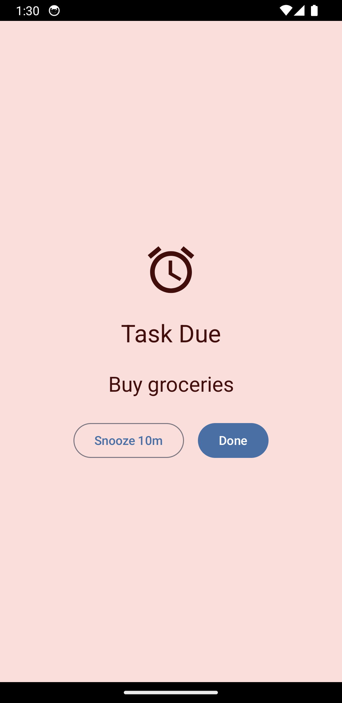

A todo app for procrastinators and forgetful people. Flexible scheduling, intrusive reminders — no rigid deadlines.




VDone is not yet on the Google Play Store. Install it directly — requires enabling installs from unknown sources.
Tap "Download APK" above, or get vdone.apk from the
Releases page.
Android 8+: when prompted after opening the APK, tap Settings → enable "Allow from this source". Older Android: Settings → Security → Unknown sources.
Open the downloaded file from your notifications or Downloads folder. Tap Install.
VDone needs Notifications, Exact alarms, and Display over other apps for reminders to work reliably.
VDone is local only. All your tasks stay on your device. No account required. No data leaves your phone. No analytics, no tracking, no ads.
The code was written by Claude Code. The intent, design, and product decisions were made by a human. Think of it as pair programming where one half of the pair never gets tired.
Source is fully open. From empty Android project to v1.0.23 — no code written by hand.